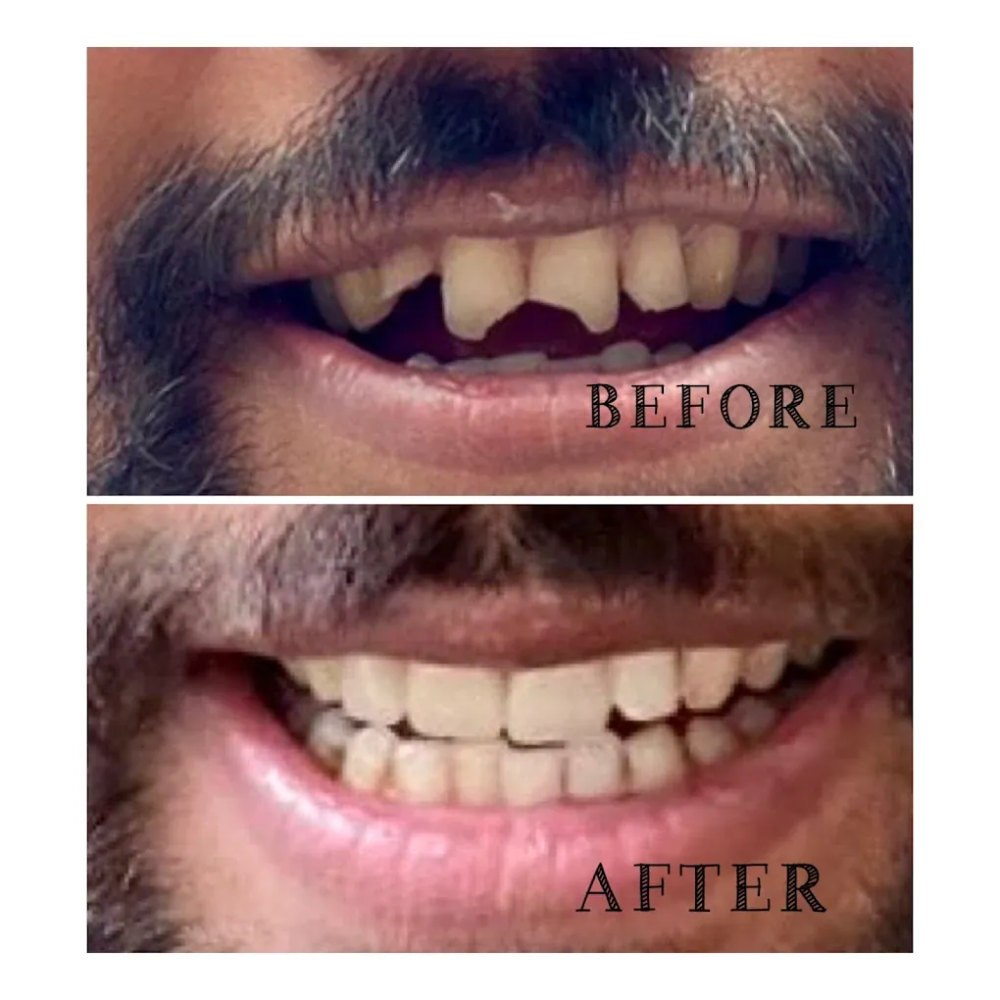
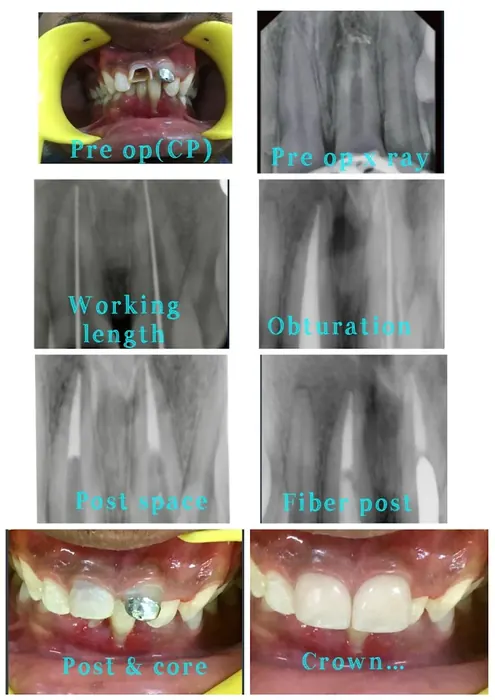
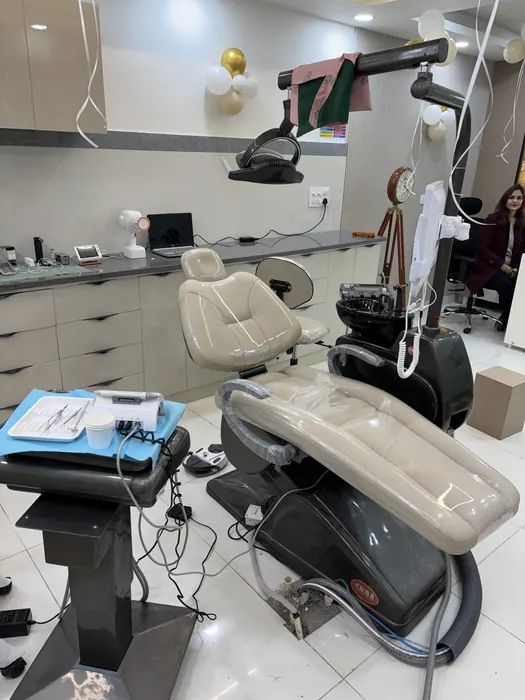
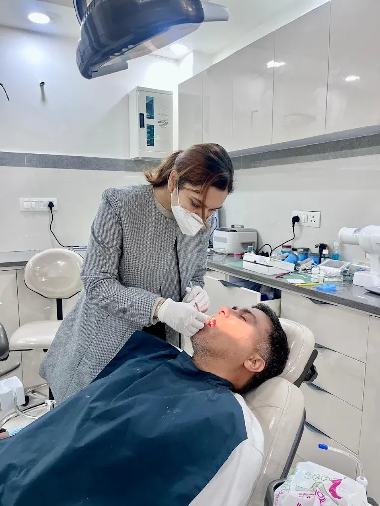

Replacing damaged or missing teeth is essential not just for a beautiful smile, but for your overall health, digestion, and speech. If you are struggling with a broken tooth, severe wear, or total tooth loss, Prosthodontics offers highly advanced reconstructive solutions. At Vital Dental we focus on rebuilding your smile natively.
Dr. Pragati Singh brings unparalleled expertise when handling complex prosthodontic cases. We use digital impressions and world-class dental laboratories to ensure every crown (tooth cap), bridge, or denture fits seamlessly into your mouth without irritation. Dr. Pragati checks and adjusts the fit at the chair, so that your new prosthetic teeth will mimic the natural translucency and strength of your original enamel.
Prosthodontic Treatments Offered
From a single missing tooth to complete arch restorations, our clinic offers comprehensive prosthetic solutions:
Zirconia & Ceramic Crowns
The highest quality metal-free restorations. Zircon & Monolith crowns provide exceptional strength paired with unmatched natural aesthetics.
PFM Crown (Vita)
Porcelain Fused to Metal caps provide a classic blend of structural durability backed by a ceramic layer for a natural look.
Indirect Ceramic Veneer
Thin, custom-made porcelain shells perfectly bonded to the front of teeth to correct chips, extreme discoloration, or uneven spacing.
Complete Dentures
Highly affordable complete dentures (upper, lower, or both) designed ergonomically to restore chewing function and facial profile after total tooth loss.
Partial Dentures
Removable solutions tailored to your mouth. We offer lightweight Flexible, Cast Metal, and traditional Acrylic partial dentures for supreme comfort.
Provisional Acrylic Crown
Temporary, comfortable protective caps placed immediately over prepared teeth while your permanent custom crown is being milled.
Co-Cr Metal Crown
Highly robust, purely metallic caps typically used for rear molars requiring high bite forces where aesthetics are heavily prioritized.
Clear Night Guard
A custom-fitted, transparent protective splint designed to stop damage caused by severe nighttime teeth grinding (Bruxism).


Why Choose Dr. Pragati Singh?
Choosing the right clinician for crowns and bridges is pivotal because microscopic gaps can cause secondary decay. At Vital Dental, we eliminate errors through precision.
- Best Zirconia Crowns: We partner strictly with premium certified dental labs to deliver beautiful, 100% biocompatible caps.
- Painless Measurements: Enjoy a gag-free, comfortable digital measurement process capturing every millimeter perfectly.
- Longevity Focus: Your bite occlusion (how your teeth fit together) is carefully balanced to ensure your restorations never crack unnecessarily under chewing pressure.
- Unhurried appointments: Patients tell us they return because we don't rush procedures; we take the time to get the fit and the bite right.

Patient FAQs
Find answers to the most common questions about fixing tooth caps and dentures:
Zirconia crowns are incredibly durable and highly resistant to normal wear and tear. With excellent oral hygiene and regular dental checkups, they can comfortably last 15 years to a lifetime.
Yes, our custom-made flexible and cast partial dentures fit perfectly to your gum tissues. Initially, they might feel slightly new, but your mouth quickly adapts to speaking and chewing confidently.
PFM (Porcelain Fused to Metal) crowns have a metal base layered with ceramic, making them durable but occasionally showing a dark line near the gums. Zirconia is 100% metal-free, offering superior strength and the most natural, translucent tooth appearance.
Not at all. The underlying tooth framework is usually prepared under local anesthesia ensuring a perfectly painless experience throughout.
Where to find us in Dehradun
We provide crowns, bridges and dentures at Vital Dental Care & Implant Center, Haripuram Colony, 2 GMS Road, Engineers Enclave, Kanwali, Dehradun, Uttarakhand 248001 — a short drive from Ballupur Chowk, Prem Nagar, Clement Town, Rajpur Road and Sahastradhara Road.
- Consulting hoursSunday to Friday, 10:00–14:00 and 16:00–20:00. Closed Saturday.
- Treating dentistDr. Pragati Singh, B.D.S., M.D.S. — Endodontist
- Appointments92868 98353 or WhatsApp
See photographs of the clinic, read about the practice, or browse our other treatments.